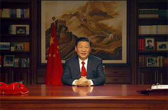

On July 1, 2016, General Secretary Xi Jinping called on the entire party to "don't forget his heart and move on" at the commemoration of the 95th anniversary of the founding of the party. This is the political mobilization that the Communist Party of China stands at the new historical starting point, sent to the whole party, and declared to the world. It is also the strongest voice of the era of the 88 million Chinese Communists. General Secretary Xi Jinping emphasized the cultural self-confidence while emphasizing “not forgetting the original heart”! The Chinese Communists have deeply felt that the people of China and the whole world have witnessed themselves - the initial heart of the Chinese Communists will never be due to our heavy cultural confidence. Cultural self-confidence, swearing four words, thunder and sorrow. Cultural self-confidence is the fourth major issue concerning the future of China's future after road confidence, institutional self-confidence and theoretical self-confidence. In the eyes of the Chinese Communists, cultural self-confidence is a more basic, broader and deeper self-confidence. Cultural self-confidence is the foundation of road confidence, institutional self-confidence, theoretical self-confidence, and the foundation of China's self-confidence. As General Secretary Xi Jinping pointed out, the excellent Chinese traditional culture cultivated in the development of more than 5,000 years of civilization, the revolutionary culture and the advanced socialist culture fostered in the great struggle of the party and the people, accumulate the deepest spiritual pursuit of the Chinese nation and represent China. A unique spiritual identity of the nation. What is cultural confidence? It is the positive spirit and attitude of life that people have because of their unique spiritual heritage. Culture refers to the process of integrating and infiltrating the information of all things in the heavens and the earth (including people). Culture is a social phenomenon, a product of people's long-term creation and formation; at the same time it is a historical phenomenon and a deposit of social history. Culture is the history, geography, customs, customs, lifestyles, literature and art, norms of behavior, ways of thinking, values, etc. of the country or nation that can be inherited from the material and separated from the material. And "confidence" is a perceptual assessment of the individual's preparations for himself. Believing in yourself is a belief. Self-confidence is a kind of enthusiasm and a positive attitude in self-evaluation. Confidence is closely related to positiveness. Without confidence, it is impossible to be active. Therefore, self-confidence can directly promote success. Yu Zhonghua has a long history and a broad civilization. The Chinese traditional culture created and sustained by the Chinese nation in thousands of years of history is the root and soul of the Chinese nation. Cultural people are the inherent functions and missions of culture. They are an excellent tradition of Chinese culture and a strong vitality of Chinese culture. Some scholars have verified that the earliest chief in charge of "cultural people" in ancient China was the deed of the era. "Historical Records Yin Ben Ji" records: He first assisted Daxie in passing the water and meritorious service, and he was named Situ by the Emperor Sui. The history book records that "the intent is Situ", who is in charge of the heavens and the next, and uses the social norms of the time to educate people. "Mencius Teng Wengong" also said: "The saints have worries, the deeds are Situ, the teachings are human, the father and the son have relatives, the monarchs are righteous, the couples are different, the young and the young are Syrian, the friends have the letter." Education between father and son (female) should be kind, between the monarch and the minister, there should be differences between husband and wife, there should be order between the young and the old, and friends should be faithful. Since the inauguration of the deed, all the officials have been kind and harmonious, Tian Xiang Xiang Rui, Phoenix Jixiang, the world began to appear Qingming Shengshi. The land of the deed is in business, its clan is a merchant, and his descendants established the Shang Dynasty. Because the enlightenment and enclosing land of the deed are in the central area of ancient China, that is, the "Central Plains" of later generations, he played an important role in the origin of the traditional Chinese culture and the beginning of Chinese civilization. In order to commemorate his teachings, he later regarded him as the Xuanwang. Xuan Wang Situ Qi has also become the first god of culture in Chinese history... After studying the history of China and the world, Liang Qichao, a master of Chinese studies, made a famous conclusion on the history of human civilization: China is the only ancient civilization in the world that has not been interrupted. Indeed, among the ancient civilizations of the world, apart from China, several others are not divided or perished. Only the Chinese civilization has been dying for five thousand years. Since ancient times, China has a history of state, Fang Zhizhi, family genealogy, and people have passed... Wanli Great Wall, Beijing Forbidden City, Qin Shihuang Mausoleum Terracotta Warriors, Beijing-Hangzhou Grand Canal... Three Generations of Bronze, Qin Brick Hanwa, Tang Sancai, Song Porcelain, Yuan Mingqing Paintings and Calligraphy ... poetry songs, piano chess and paintings... all bear the unique historical imprint of the Chinese nation. From national museums to local memorial halls, the history and culture of the nation are inherited and the spiritual home of every Chinese is built. As ordinary people, they pay more attention to the ancestral hall of their own family, because here is the resting place and cultural coordinates of the soul. In addition, there are also the unique spirits of the Chinese who have been passed down from generation to generation. The feelings and spiritual home of the home country let us know where we are from, and let us know where we are going. The cultural self-confidence of the Chinese Communists is derived from the unique cultural nourishment of 5,000 years, which is closely related to the spiritual blood of the Chinese nation. The cultural genes of the Communist Party of China have created the initial heart of our wholehearted service to the people. In the past 95 years, no matter how the times develop and how the society progresses, the initial heart of the Chinese Communist Party will not be forgotten. On July 23, 1921, in an ordinary painting in Nanhu, Jiaxing, the Chinese Communist Party, which was just announced, established the most fundamental principle of "for whom." During the revolutionary war years, Comrade Mao Zedong regarded "serving the people wholeheartedly" as the fundamental purpose of our party. Since the reform and opening up, Comrade Deng Xiaoping pointed out: All our work and policies must be beneficial to the people. The people are satisfied and dissatisfied. The people agree that they disapprove. The people promise not to agree. If they do, they will not be against the people. Since the 18th National Congress of the Communist Party of China, General Secretary Xi Jinping has proposed that the people’s affairs are our concern... from the time of the revolutionary war, Zhang Side, who wholeheartedly serves the people, to the period of socialist construction, “I will never make a rust forever. Lei Feng, the "model of the county party secretary" Jiao Yulu, and the "era pioneer" Guo Mingyi emerged on the great journey of realizing the Chinese nation's great rejuvenation of the Chinese dream, they all interpret their own never with their own actions. Faded initial heart. In the centuries, centuries of heroes, they moved from reality to the peak of ideals. They are living characters, all have real stories, all of which have become our unique cultural totems... poetry, novels, movies, dramas, all of which are preaching this cultural concept, and thoughts, actions, and speeches are inherited. This spiritual power. This miraculous form is the inexhaustible source of strength and spiritual power that we inexhaustible—revolutionary culture and advanced socialist culture. Various cultural forms such as literature and art, radio, film and television, and drama and art have been sublimated along with the great practice of the Communists in creating China's revolution, construction, and reform and opening up, and they have even radiated the glory of the times If the sky is old and the sky is old, the right way is the vicissitudes of life. Looking back at the history of the development of human communism, the history of the Communist Party of China is the most magnificent chapter. From the initial 12 representatives, to the world's largest Marxist ruling party, we have been able to persist in the past, for 95 years, which stems from the unique cultural self-confidence of our Chinese Communists. The excellent traditional culture and revolutionary culture of the Chinese nation, as well as the advanced socialist culture, are in the same vein and inseparable, and together they form the spiritual umbilical cord of our communists. With the nourishment of this unique culture, we can develop a particularly strong self-confidence that will make our business alive. The great cause of building a well-off society in an all-round way is like the rush of the East Red Sun, and the Chinese nation’s great rejuvenation of the Chinese dream will surely be realized! 